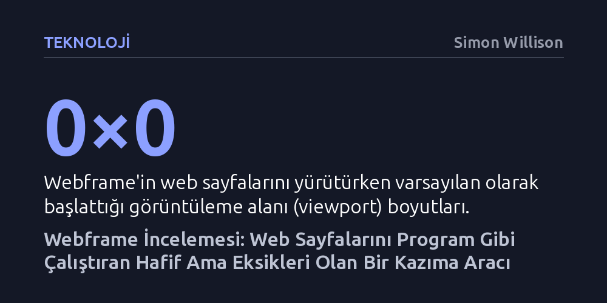

TEKNOLOJI · Simon Willison · 2026-10-27
Webframe, harici bir tarayıcı motoruna ihtiyaç duymadan sistem WebView'ını kullanarak web sayfalarını hızlıca çalıştırıp veri kazıyabiliyor. Ancak CSP engelleri, eksik HTTP üstverileri ve askıda kalan yüklemeler gibi ciddi pürüzleri bulunuyor.
Web otomasyonunda devasa Playwright veya Chromium paketlerine mahkûm olmadan, işletim sisteminin yerleşik tarayıcısıyla çok daha hafif araçlar geliştirilebileceğini gösterir.

Jeff Lindsay tarafından geliştirilen webframe, web sayfalarını ve istemci tarafı JavaScript kodlarını tıpkı yerel bir komut satırı programı gibi çalıştırmayı amaçlayan bir açık kaynak projesidir. Temel mantığı oldukça yalındır: Araca bir URL veya yerel dosya yolu verirsiniz; o da hedefi arka planda, kullanıcı arayüzü bulunmayan görünmez bir web penceresinde açar.
Sayfadaki betiklerin ürettiği konsol çıktıları doğrudan standart çıktıya (stdout), oluşan istisnalar ve hata kayıtları ise standart hata akışına (stderr) yönlendirilir. Böylece karmaşık web sayfalarından veri çekmek ya da sayfada JavaScript yürütmek, sanki standart bir Unix aracı kullanılıyormuşçasına pratik hâle gelir.
Webframe'in en dikkat çekici teknik tercihi, Go diliyle yazılmış olması ve sistem tarayıcılarına erişim sağlayan glaze kütüphanesini kullanmasıdır. Puppeteer ya da Playwright gibi yaygın otomasyon kütüphaneleri yüzlerce megabaytlık bağımsız Chromium ikililerini indirmeyi gerektirirken, webframe doğrudan işletim sisteminde zaten var olan bileşenlere dayanır.
Araç macOS ortamında WKWebView, Linux'ta WebKitGTK ve Windows üzerinde WebView2 katmanını çağırarak çalışır. Bu mimari, aracın hem kurulum boyutunu minimumda tutar hem de bellek tüketimini düşürür. Nitekim Simon Willison'ın yaptığı değerlendirmeler, webframe'in hız açısından Playwright tabanlı shot-scraper aracıyla yarışabilecek düzeyde olduğunu doğrulamaktadır.
Hafif mimarisine rağmen webframe henüz üretim seviyesinde bir kazıma aracı olmaktan uzaktır. Yapılan denemelerde, modern webin katı güvenlik kuralları olan İçerik Güvenlik Politikası (CSP) kısıtlamalarına takıldığı ve bu durumlarda başarısız olduğu gözlemlenmiştir. Ayrıca varsayılan olarak 0×0 piksellik bir görüntüleme alanıyla açılması, responsive veya ekrana duyarlı bazı içeriklerin düzgün yüklenmesini engellemektedir.
Bunlara ek olarak bazı web sayfalarında yükleme sürecinin belirsiz şekilde askıda kalması, durum kodları gibi temel HTTP üstverilerinin sunulmaması ve tarayıcı yaşam döngüsü üzerindeki denetimin sınırlı olması önemli eksiklikler olarak öne çıkmaktadır. Özetle webframe yenilikçi ve umut verici bir yaklaşım sunsa da güvenilir bir kazıma aracına dönüşebilmesi için bu pürüzlerin giderilmesi gerekmektedir.